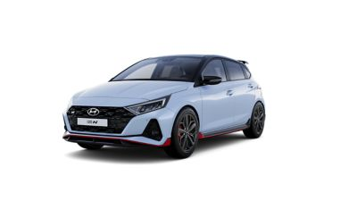
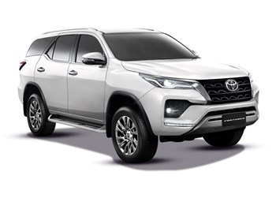
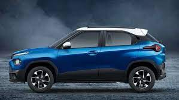
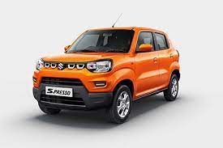

HI I'M PRITHEESHKUMAR
HYUNDAI:

Hyundai Motor Company, often abbreviated to Hyundai Motors and commonly known as Hyundai, is a South Korean multinational automotive manufacturer headquartered in Seoul, South Korea. Hyundai Motor Company was founded in 1967.Hyundai operates the world's largest integrated automobile manufacturing facility in Ulsan, South Korea which has an annual production capacity of 1.6 million units.[9] The company employs about 75,000 people worldwide. Hyundai vehicles are sold in 193 countries through 5,000 dealerships and showrooms.Chung Ju-Yung founded the Hyundai Engineering and Construction Company in 1947. Hyundai Motor Company was later established in 1967, and the company's first model, the Cortina, was released in cooperation with Ford Motor Company in 1968.On 30 September 2011, Yang Seung Suk announced his retirement as CEO of Hyundai Motor Co. In the interim replacement period, Chung Mong-koo and Kim Eok-jo will divide the duties of the CEO position.In 2014, Hyundai started an initiative to focus on improving vehicle dynamics in its vehicles and hired Albert Biermann, former Vice President of Engineering at BMW M to direct chassis development for Hyundai vehicles; stating "The company intends to become a technical leader in ride and handling, producing vehicles that lead their respective segments for driver engagement.
TOYOTA:

The company was originally founded as a spinoff of Toyota Industries, a machine maker started by Sakichi Toyoda, Kiichiro's father. Both companies are now part of the Toyota Group, one of the largest conglomerates in the world. While still a department of Toyota Industries, the company developed its first product, the Type A engine in 1934 and its first passenger car in 1936, the Toyota AA.After World War II, Toyota benefited from Japan's alliance with the United States to learn from American automakers and other companies, which would give rise to The Toyota Way (a management philosophy) and the Toyota Production System (a lean manufacturing practice) that would transform the small company into a leader in the industry and would be the subject of many academic studies.In the 1960s, Toyota took advantage of a rapidly growing Japanese economy to sell cars to a growing middle-class, leading to the development of the Toyota Corolla, which would go on to become the world's all-time best-selling automobile. The booming economy also funded an international expansion that would allow Toyota to grow into one of the largest automakers in the world, the largest company in Japan and the ninth-largest company in the world by revenue, as of December 2020. Toyota was the world's first automobile manufacturer to produce more than 10 million vehicles per year, a record set in 2012, when it also reported the production of its 200 millionth vehicle.Toyota was praised for being a leader in the development and sales of more fuel efficient hybrid electric vehicles, starting with the introduction of the Toyota Prius in 1997. The company now sells more than 40 hybrid vehicle models around the world. However, more recently, the company has also been accused of greenwashing for its skepticism of all-electric vehicles and its focus on the development of hydrogen fuel cell vehicles, like the Toyota Mirai, a technology that is costlier and has fallen far behind electric batteries.Japan was heavily damaged in World War II and Toyota's plants, which were used for the war effort, were not spared. On August 14, 1945, one day before the surrender of Japan, Toyota's Koromo Plant was bombed by the Allied forces. After the surrender, the U.S.-led occupying forces banned passenger car production in Japan. However, automakers like Toyota were allowed to begin building trucks for civilian use, in an effort to rebuild the nation's infrastructure.
NISSAN:
 DAT had inherited Kubota's chief designer, American engineer William R. Gorham. This, along with Aikawa's 1908 visit to Detroit, was to greatly affect Nissan's future. Although it had always been Aikawa's intention to use cutting-edge auto making technology from America, it was Gorham that carried out the plan. Most of the machinery and processes originally came from the United States. When Nissan started to assemble larger vehicles under the "Nissan" brand in 1937, much of the design plans and plant facilities were supplied by the Graham-Paige Company.Nissan also had a Graham license under which passenger cars, buses, and trucks were made.In his 1986 book The Reckoning, David Halberstam states "In terms of technology, Gorham was the founder of the Nissan Motor Company" and that "young Nissan engineers who had never met him spoke of him as a god and could describe in detail his years at the company and his many inventions.From 1934 Datsun began to build Austin 7s under license. This operation became the greatest success of Austin's overseas licensing of its Seven and marked the beginning of Datsun's international success.In 1952, Nissan entered into a legal agreement with Austin,for Nissan to assemble 2,000 Austins from imported partially assembled sets and sell them in Japan under the Austin trademark.
DAT had inherited Kubota's chief designer, American engineer William R. Gorham. This, along with Aikawa's 1908 visit to Detroit, was to greatly affect Nissan's future. Although it had always been Aikawa's intention to use cutting-edge auto making technology from America, it was Gorham that carried out the plan. Most of the machinery and processes originally came from the United States. When Nissan started to assemble larger vehicles under the "Nissan" brand in 1937, much of the design plans and plant facilities were supplied by the Graham-Paige Company.Nissan also had a Graham license under which passenger cars, buses, and trucks were made.In his 1986 book The Reckoning, David Halberstam states "In terms of technology, Gorham was the founder of the Nissan Motor Company" and that "young Nissan engineers who had never met him spoke of him as a god and could describe in detail his years at the company and his many inventions.From 1934 Datsun began to build Austin 7s under license. This operation became the greatest success of Austin's overseas licensing of its Seven and marked the beginning of Datsun's international success.In 1952, Nissan entered into a legal agreement with Austin,for Nissan to assemble 2,000 Austins from imported partially assembled sets and sell them in Japan under the Austin trademark.
TATA:

Tata Motors Limited is an Indian multinational automotive manufacturing company, headquartered in the city of Mumbai, India which is part of Tata Group. The company produces passenger cars, trucks, vans, coaches, buses, luxury cars, sports cars, construction equipment.Tata Motors' principal subsidiaries include British premium car maker Jaguar Land Rover (the maker of Jaguar and Land Rover cars) and the South Korean commercial vehicle manufacturer Tata Daewoo. Tata Motors has a construction-equipment manufacturing joint venture with Hitachi (Tata Hitachi Construction Machinery), and a joint venture with Stellantis which manufactures automotive components and Fiat Chrysler and Tata branded vehicles. On Oct 12, 2021 private equity firm TPG invested $1 billion in Tata Motors' electric vehicle subsidiary.In 2009, its Lucknow plant was awarded the "Best of All" Rajiv Gandhi National Quality Award.Tata Daewoo (officially Tata Daewoo Commercial Vehicle Company and formerly Daewoo Commercial Vehicle Company) is a commercial vehicle manufacturer headquartered in Gunsan, Jeollabuk-do South Korea, and a wholly owned subsidiary of Tata Motors. It is the second-largest heavy commercial vehicle manufacturer in South Korea and was acquired by Tata Motors in 2004. The principal reasons behind the acquisition were to reduce Tata's dependence on the Indian commercial vehicle market (which was responsible for around 94% of its sales in the MHCV segment and around 84% in the light commercial vehicle segment) and expand its product portfolio by leveraging on Daewoo's strengths in the heavy-tonnage sector.
Tata Motors has jointly worked with Tata Daewoo to develop trucks such as Novus and World Truck and buses including GloBus and StarBus. In 2012, Tata began developing a new line to manufacture competitive and fuel-efficient commercial vehicles to face the competition posed by the entry of international brands such as Mercedes-Benz, Volvo, and Navistar into the Indian market.
MARUTI:

Maruti Suzuki India Limited, formerly known as Maruti Udyog Limited, is an Indian automobile manufacturer, based in New Delhi. It was founded in 1981 and owned by the Government of India until 2003, when it was sold to the Japanese automaker Suzuki Motor Corporation.In 1982, a license and joint venture agreement (JVA) was signed between Maruti Udyog Ltd., and Suzuki of Japan. At first, Maruti Suzuki was mainly an importer of cars. In India's closed market, Maruti received the right to import 2 fully built-up Suzuki in the first two years, and even after that, the early goal was to use only 33% indigenous parts. This upset the local manufacturers considerably. There were some concerns that the Indian market was too small to absorb the comparatively large production planned by Maruti Suzuki, with the government even considering adjusting the petrol tax and lowering the excise duty in order to boost sales.In 1989, the Maruti 1000 was introduced and the 970 cc, three-box was India's first contemporary sedan. By 1991, 65 percent of the components, for all vehicles produced, were indigenized. After liberalization of the Indian economy in 1991, Suzuki increased its stake in Maruti to 50 percent, making the company a 50-50 joint venture with the government of India as the other stakeholder.In 1993, the Zen, a 993 cc engined hatchback was launched and in 1994 the 1,298 cc Esteem sedan was introduced. Maruti produced its 1 millionth vehicle since the commencement of production in 1994. Maruti's second plant was opened with annual capacity reaching 200,000 units. Maruti launched a 24-hour emergency on-road vehicle service. In 1998, the new Maruti 800 was released, being the first change in design since 1986. Zen D, a 1,527 cc diesel hatchback, and Maruti's first diesel vehicle, and a redesigned Omni were introduced. In 1999, the 1.6-litre Maruti Baleno three-box sedan and Wagon R were also launched.On 25 April 2019, Maruti Suzuki announced that it would phase out production of diesel cars by 1 April 2020, when the Bharat Stage VI emission standards come into effect. The new standards would require a significant investment from the company to upgrade its existing diesel engines to comply with the more stringent emission standards. Chairman R.C. Bhargava stated, "We have taken this decision so that in 2022 we are able to meet the corporate average fuel efficiency (CAFE) norms and higher share of CNG vehicles will help us comply with the norms. I hope the union government's policies will help grow the market for CNG vehicles." Diesel cars accounted for about 23 percent of Maruti Suzuki's annual sales.